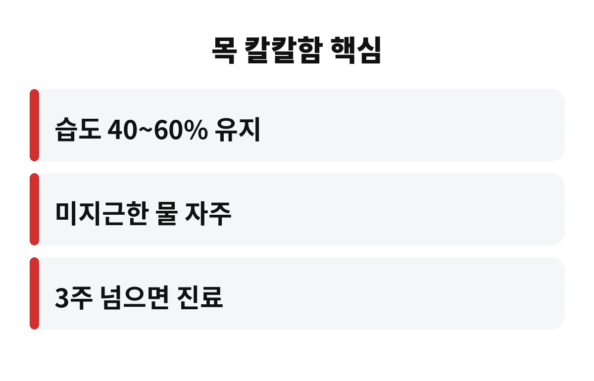
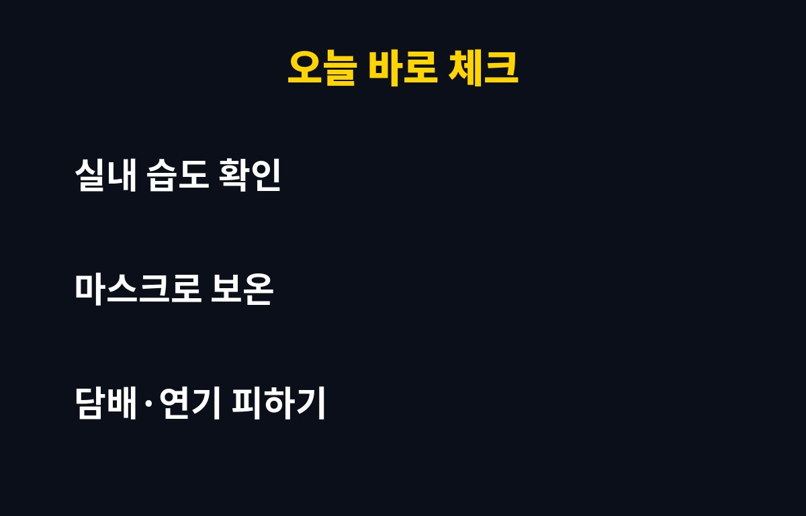

환절기 목 칼칼함은 대개 건조한 공기와 일교차 때문에 생기고, 보통 며칠에서 길어도 2주 안쪽이면 가라앉는 경우가 많습니다. 그런데 아침마다 목이 따갑고 마른기침이 3주 넘게 이어지고 있다면, 단순한 건조함이 아닐 수도 있어서 한 번쯤 짚고 가야 해요.
출근길에 목이 칼칼한데 "곧 낫겠지" 하고 넘기는 직장인분들 정말 많죠. 그 선택이 괜찮은 경우와 아닌 경우를 오늘 확실하게 나눠 드릴게요.
밤새 자는 동안 우리는 입을 벌리고 숨 쉬는 경우가 많습니다. 여기에 난방을 켜기 시작하는 요즘 같은 계절에는 방 안 공기가 확 건조해지죠. 코로 숨을 쉬면 공기가 따뜻하고 촉촉해져서 목으로 넘어가는데, 입으로 쉬면 마른 공기가 목 점막을 그대로 훑고 지나갑니다. 그래서 일어나자마자 목이 따갑고 칼칼한 느낌이 드는 거예요.
여기에 일교차까지 더해지면 점막이 더 예민해집니다. 낮에는 따뜻하다가 아침저녁으로 기온이 뚝 떨어지니 목 점막이 적응할 틈이 없어요. 환절기 목 칼칼함이 유독 이 시기에 많은 이유가 바로 이겁니다. 대부분은 건조함과 일교차가 만든 일시적인 자극이라 생활 습관만 바꿔도 훨씬 편해져요.
실내 습도는 보통 40~60% 정도가 쾌적하다고 알려져 있습니다. 이 아래로 내려가면 목과 코의 점막이 쉽게 마르고, 마른 점막은 먼지나 바이러스를 걸러내는 힘도 떨어져요. 그러니 목이 칼칼한 날이 반복된다면 먼저 집과 사무실의 습도부터 확인해 보시는 게 좋습니다.
습도계가 없다면 저렴한 제품 하나만 책상에 두셔도 충분합니다. 가습기가 없다면 젖은 수건을 널어 두거나, 물을 담은 컵을 침대 근처에 두는 것만으로도 체감이 달라져요. 다만 가습기는 물때가 끼기 쉬우니 자주 닦아 주셔야 합니다. 오히려 관리를 안 한 가습기가 목을 더 자극할 수 있거든요.

가장 쉬운 건 미지근한 물을 자주 조금씩 마시는 겁니다. 한 번에 벌컥 마시기보다 홀짝홀짝 마셔서 목을 계속 적셔 주는 게 좋아요. 너무 차갑거나 뜨거운 물은 오히려 자극이 될 수 있으니 미지근한 정도가 딱 맞습니다.
두 번째는 마스크입니다. 마스크는 내가 내쉰 숨의 습기를 어느 정도 가둬 줘서, 찬 공기와 건조한 공기로부터 목을 지켜 줘요. 출퇴근길과 자는 동안에도 가볍게 쓰는 분들이 있을 정도입니다. 세 번째는 담배 연기와 미세먼지, 향이 강한 방향제 같은 자극을 피하는 거예요. 목이 약해진 시기에는 작은 자극도 크게 느껴집니다.
| 상태 | 이렇게 해보세요 |
| 아침에만 칼칼함 | 실내 습도 올리기, 자기 전 물 한 컵 |
| 마른기침이 며칠째 | 미지근한 물, 마스크, 목 보온 |
| 3주 넘게 지속 | 이비인후과나 내과 진료 |
기침이나 목 불편감이 3주 이상 이어진다면 단순 건조함으로만 보기 어렵습니다. 알레르기 비염 때문에 콧물이 목 뒤로 넘어가는 경우도 있고, 역류성 식도염이나 기관지 쪽 문제가 숨어 있는 경우도 있어요. 이런 건 습도만 맞춘다고 해결되지 않습니다.
특히 열이 나거나, 숨이 차거나, 가래에 피가 섞이거나, 목소리가 계속 쉬는 증상이 함께 있다면 기다리지 말고 바로 진료를 받으세요. 부모님이 마른기침을 오래 하신다면 "나이 들면 그렇지" 하고 넘기지 말고 꼭 모시고 가 보시길 권해 드립니다. 일찍 확인하면 별일 아니었다는 확인만 하고 끝나는 경우가 대부분이니까요.

요즘 아침마다 목이 칼칼하신가요? 어떤 방법이 제일 효과 있었는지 댓글로 알려 주세요. 도움이 되셨다면 구독해 주시면 다음 건강 소식도 가장 먼저 전해 드릴게요.
※ 이 글은 일반적인 건강 정보로, 증상이 지속되거나 걱정되면 전문의 상담을 권장합니다.